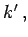
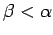
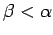
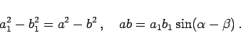

Inhalt Index DeskTop Bronstein

 Geometrie Vektoralgebra und analytische Geometrie Analytische Geometrie der Ebene Hyperbel
Geometrie Vektoralgebra und analytische Geometrie Analytische Geometrie der Ebene Hyperbel


Durchmesser der Hyperbel werden diejenigen Sehnen zwischen den zwei Ästen einer Hyperbel genannt, die durch den gemeinsamen Mittelpunkt verlaufen, der sie halbiert.
Zwei Durchmesser mit den Richtungskoeffizienten k und  die zu einer Hyperbel und ihrer konjugierten Hyperbel gehören, werden konjugiert genannt, wenn kk'= b2/a2 ist. Von jedem der beiden konjugierten Durchmesser werden die Sehnen der gegebenen bzw. der zu ihr konjugierten Hyperbel, die parallel zu dem anderen Durchmesser verlaufen, in zwei gleiche Teile geteilt. Von zwei konjugierten Durchmessern schneidet nur der mit |k| < b/a die Hyperbel. Die dabei entstehende Sehne, ein Durchmesser im engeren Sinne des Wortes, wird im Hyperbelmittelpunkt halbiert. Wenn 2a1 bzw. 2b1 die Längen zweier konjugierter Durchmesser sind und  bzw.  die spitzen Winkel, die diese Durchmesser mit der reellen Achse bilden, dann gilt
bzw.  die spitzen Winkel, die diese Durchmesser mit der reellen Achse bilden, dann gilt
|  | (3.361) |